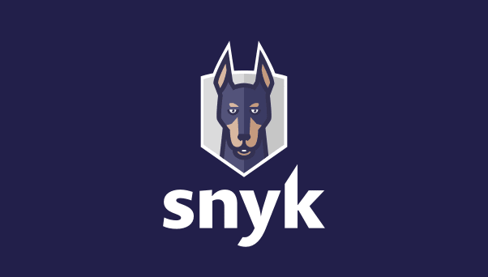

Recently, I attended a webinar about Snyk, a powerful developer tool designed to identify and address code vulnerabilities. Although the webinar was relatively short, lasting only 30 minutes, it was packed with valuable insights into the importance of securing code and the efficiency of Snyk in detecting vulnerabilities. The webinar highlighted how easily vulnerabilities can be introduced into code, even by experienced developers. One particularly fascinating aspect was the demonstration of Snyk’s capability to catch these vulnerabilities quickly and effectively. The tool's user-friendly interface and robust scanning features make it an essential addition to any developer's toolkit. A notable part of the webinar was the examples involving AI-generated code, such as that produced by GitHub Copilot. These examples underscored the potential risks associated with relying on AI for coding, as even sophisticated AI tools can generate code with security flaws. Snyk's ability to identify these issues reinforces its value in maintaining secure coding practices. Despite its brevity, the webinar was highly informative. It provided a clear understanding of how Snyk operates and its significance in the development process. The insights gained from this session have underscored the importance of integrating security tools like Snyk into the development lifecycle to proactively address potential vulnerabilities. Overall, attending the Snyk webinar was a worthwhile experience that has enhanced my knowledge of code security and the practical applications of developer tools in safeguarding software.
